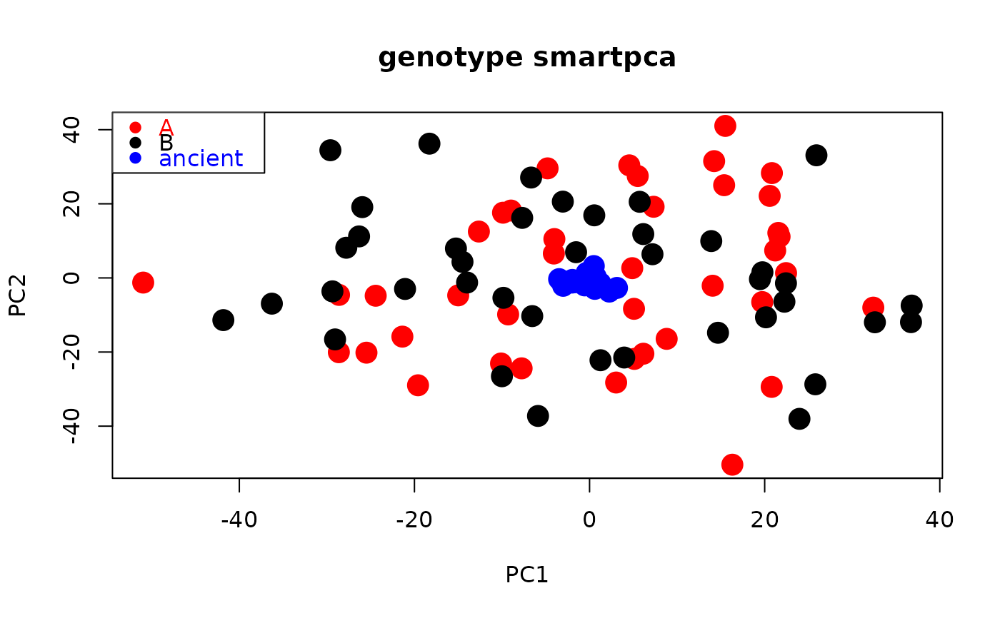

Compute Principal Component Analysis (PCA) for variable x sample genotype data including covariance (centered), correlation (z-score) and SMARTPCA scaling,
and implements projection of ancient samples onto modern PCA space. SMARTPCA scaling controls for genetic drift when variables are bi-allelic genetic markers
such as single nucleotide polymorphisms (SNP) following Patterson, Price and Reich (2006).
Optimized to run fast single value decomposition for big datasets.
Arguments
- snp_data
File name read from working directory. SNP = rows, samples = columns without row names or column headings. SNP values must be count data (no decimals allowed). File extension detected automatically whether text or
EIGENSTRAT. See details.- packed_data
Logical value for
EIGENSTRAT, irrelevant for text data. Defaultpacked_data = FALSEassumes uncompressedEIGENSTRAT.packed_data = TRUEfor compressed or binaryEIGENSTRAT(PACKENDANCESTRYMAP).- sample_group
Character or numeric vector assigning samples to groups. Coerced to factor.
- sample_remove
Logical
FALSEor numeric vector indicating column numbers (samples) to be removed from computations. Defaultsample_remove = FALSEkeeps all samples.- snp_remove
Logical
FALSEor numeric vector indicating row numbers (SNPs) to be removed from computations. Defaultsnp_remove = FALSEkeeps all SNPs. See details.- missing_value
Number
9or stringNAindicating missing value. Defaultmissing_value = 9as inEIGENSTRAT. If no missing values present, no effect on computation.- missing_impute
String handling missing values. Default
missing_impute = "mean"replaces missing values of each SNP by mean of non-missing values across samples.missing_impute = "remove"removes SNPs with at least one missing value. If no missing values present, no effect on computation.- scaling
String. Default
scaling = "drift"scales SNPs to control for expected allele frequency dispersion caused by genetic drift (SMARTPCA).scaling = "center"forcentering(covariance-based PCA).scaling = "sd"forcenteredSNPs divided by standard deviation (correlation-based PCA).scaling = "none"for no scaling. See details.- program_svd
String indicating R package computing single value decomposition (SVD). Default
program_svd = "Rspectra"forsvds.program_svd = "bootSVD"forfastSVD. See details.- pc_axes
A numeric value. If
program_svd = "Rspectra"this argument indicates number of PCA axes computed starting with PCA axis 1. Defaultpc_axes = 2computes PCA axes 1 and 2. No effect on computation ifprogram_svd = "bootSVD"since all PCA axes are computed.- sample_project
Numeric vector indicating column numbers (ancient samples) projected onto (modern) PCA space. Default
sample_project = FALSEindicates no samples will be used for projection. See details.- pc_project
Numeric vector indicating the ranks of the PCA axes ancient samples are projected onto. Default
pc_ancient = c(1, 2)for PCA axes 1 and 2. Ifprogram_svd = "RSpectra",length(pc_ancient)must be smaller than or equal topc_axes. No effect on computation, if no ancient samples present.
Value
Returns a list containing the following elements:
pca.snp_loadings: Dataframe of principal coefficients of SNPs. One set of coefficients per PCA axis computed.pca.eigenvalues: Dataframe of eigenvalues, variance and cumulative variance explained. One eigenvalue per PCA axis computed.pca_sample_coordinates: Dataframe showing PCA sample summary. Column Group assigns samples to groups. Column Class specifies if samples were "Removed" from PCA or "Projected" onto PCA space. Additional columns show principal components (coordinates) of samples in PCA space (1 column per PCA computed, named PC1, PC2, ...).
Details
PCA is a rigid rotation of a Cartesian coordinate system (samples = points, axes = variables or SNPs) that maximizes the dispersion of points along a new system of axes (Pearson 1901; Hotelling 1933; Jolliffe 2002).
In rotated space (ordination), axes are principal axes (PCA axes), eigenvalues measure variance explained, and principal coefficients measure importance of SNPs (eigenvectors), principal components are coordinates of samples (i.e., linear combinations of scaled variables weighted by eigenvectors).
Principal coefficients are direction cosines between original and PCA axes (Legendre & Legendre 2012). PCA can be computed by eigenanalysis or, as implemented here, single value decomposition (SVD).
SNPs can be scaled in four different ways prior to SVD: (1) no scaling; (2) covariance: SNPs centered such that M(i,j) = C(i,j) minus mean(j)) where C(i,j) is the number of variant alleles for SNP j and sample i, and M(i,j) is the centered value of each data point; (3) correlation (z-scores): SNPs centered then divided by standard deviation sd(j), (4) SMARTPCA: SNPs centered then divided by sqrt(p(j)(1-p(j))), where p(j) equals mean(j) divided by 2, quantifies the underlying allele frequency (autosomal chromosomes) and conceptualizes that SNP frequency changes at rate proportional to sqrt(p(j)(1-p(j))) per generation due to genetic drift (Patterson, Price and Reich 2006).
SMARTPCA standardization results in all SNPs that comply with Hardy-Weinberg equilibrium having identical variance.
SMARTPCA (Patterson, Price and Reich 2006) and EIGENSTRAT (Price, Patterson, Plenge, Weinblatt, Shadick and Reich 2006) are the computing suites of software EIGENSOFT (https://reich.hms.harvard.edu/software).
svds runs single value decomposition much faster than fastSVD. With svds, pc_axes indicates number of eigenvalues and eigenvectors computed starting from PCA axis 1. fastSVD computes all eigenvalues and eigenvectors. Eigenvalues calculated from singular values divided by number of samples minus 1. If number of samples equals number of SNPS, fastSVD prints message alert that no computing efficiency is achieved for square matrices.
Ancient samples (with many missing values) can be projected onto modern PCA space derived from modern samples.
Following Nelson Taylor and MacGregor (1996), the projected coordinates of a given ancient sample equal the slope coefficient of linear fit through the origin of (scaled) non-missing SNP values of that sample (response) versus principal coefficients of same SNPs in modern samples.
Number of projected coordinates per ancient sample given by length(pc_ancient).
With svds, pc_axes must be larger or equal to length(pc_ancient).
Data read from working directory with SNPs as rows and samples as columns.
Two alternative formats: (1) text file of SNPs by samples (file extension and column separators recognized automatically) read using fread; or (2) duet of EIGENSTRAT files (see https://reich.hms.harvard.edu/software) using vroom_fwf, including a genotype file of SNPs by samples (*.geno), and a sample file (*.ind) containing three vectors assigning individual samples to unique user-predefined groups (populations), sexes (or other user-defined descriptor) and alphanumeric identifiers.
For EIGENSTRAT, vector sample_group assigns samples to groups retrievable from column of file *.ind. SNPs with zero variance removed prior to SVD to optimize computation time and avoid undefined values if scaling = "sd" or "drift".
Users can select subsets of samples or SNPs by introducing a vector including column numbers for samples (sample_remove) and/or row numbers for SNPs (snp_remove) to be removed from computations.
Function stops if the final number of SNPs is 1 or 2.
EIGENSOFT was conceived for the analysis of human genes and its SMARTPCA suite so accepts 22 (autosomal) chromosomes by default.
If >22 chromosomes are provided and the internal parameter numchrom is not set to the target number chromosomes of interest, SMARTPCA automatically subsets chromosomes 1 to 22.
In contrast, smart_pca accepts any number of autosomes with or without the sex chromosomes from an EIGENSTRAT file.
References
Hotelling, H. (1933) Analysis of a complex of statistical variables into principal components. Journal of Educational Psychology, 24, 417-441.
Jolliffe, I.T. (2002) Principal Component Analysis (Springer, New York, USA).
Legendre, P. & L. F. J. Legendre (2012). Numerical ecology. Developments in environmental modelling (Elsevier, Oxford, UK).
Nelson, P.R.C., P.A. Taylor, and J.F. MacGregor (1996) Missing data methods in PCA and PLS: score calculations with incomplete observations. Chemometrics and Intelligent Laboratory Systems, 35, 45-65.
Patterson, N.J., A. L. Price and D. Reich (2006) Population structure and eigenanalysis. PLoS Genetics, 2, e190.
Pearson, K. (1901) On lines and planes of closest fit to systems of points in space. Philosophical Magazine, 2, 559-572.
Price, A.L., N.J. Patterson, R.M. Plenge, M.E. Weinblatt, N.A. Shadick and David Reich (2006). Principal components analysis corrects for stratification in genome-wide association studies. Nature Genetics, 38, 904-909.
See also
Examples
# Path to example genotype matrix "dataSNP"
pathToGenoFile = system.file("extdata", "dataSNP", package = "smartsnp")
# Example 1: modern samples
#assign 50 samples to each of two groups and colors
my_groups <- c(rep("A", 50), rep("B", 50)); cols = c("red", "blue")
#run PCA with truncated SVD (PCA 1 x PCA 2)
pcaR1 <- smart_pca(snp_data = pathToGenoFile, sample_group = my_groups)
#> Checking argument options selected...
#> Argument options are correct...
#> Loading data...
#> Imported 10000 SNP by 100 sample genotype matrix
#> Time elapsed: 0h 0m 0s
#> Filtering data...
#> No samples projected after PCA computation
#> 10000 SNPs included in PCA computation
#> 100 samples included in PCA computation
#> Completed data filtering
#> Time elapsed: 0h 0m 0s
#> Scanning for invariant SNPs...
#> Scan complete: no invariant SNPs found
#> Time elapsed: 0h 0m 0s
#> Checking for missing values...
#> 6341 SNPs contain missing values
#> Imputing SNPs with missing values...
#> Imputation with means completed: 10058 missing values imputed
#> Time elapsed: 0h 0m 0s
#> Scaling values by SNP...
#> Centering and scaling by drift dispersion...
#> Completed scaling using drift
#> Time elapsed: 0h 0m 0s
#> Computing singular value decomposition using RSpectra...
#> Completed singular value decomposition using RSpectra
#> Time elapsed: 0h 0m 1s
#> Extracting eigenvalues and eigenvectors...
#> Eigenvalues and eigenvectors extracted
#> Time elapsed: 0h 0m 1s
#> Tabulating PCA outputs...
#> Completed tabulations of PCA outputs...
pcaR1$pca.eigenvalues # extract eigenvalues
#> PC1 PC2
#> observed eigenvalues 321.195060 317.773982
#> variance explained 1.209482 1.196600
#> cumulative variance explained 1.209482 2.406083
head(pcaR1$pca.snp_loadings) # extract principal coefficients (SNP loadings)
#> PC1 PC2
#> 1 0.0046337236 -0.002775738
#> 2 0.0018116572 0.011950491
#> 3 0.0096288656 -0.011907379
#> 4 0.0055371026 0.001682321
#> 5 -0.0046772139 0.002187803
#> 6 0.0004521752 0.002215284
head(pcaR1$pca.sample_coordinates) # extract principal components (sample position in PCA space)
#> Group Class PC1 PC2
#> 1 A PCA 4.768216 13.413303
#> 2 A PCA -16.661893 -9.789570
#> 3 A PCA -25.643492 5.994816
#> 4 A PCA -2.453762 -25.043319
#> 5 A PCA 19.760752 7.214635
#> 6 A PCA -28.587658 2.656167
#plot PCA
plot(pcaR1$pca.sample_coordinates[,c("PC1","PC2")], cex = 2,
pch = 19, col = cols[as.factor(my_groups)], main = "genotype smartpca")
legend("topleft", legend = levels(as.factor(my_groups)), cex =1,
pch = 19, col = cols, text.col = cols)
 # Example 2: modern and ancient samples (ancient samples projected onto modern PCA space)
#assign samples 1st to 10th per group to ancient
my_ancient <- c(1:10, 51:60)
#run PCA with truncated SVD (PCA 1 x PCA 2)
pcaR2 <- smart_pca(snp_data = pathToGenoFile, sample_group = my_groups, sample_project = my_ancient)
#> Checking argument options selected...
#> Argument options are correct...
#> Loading data...
#> Imported 10000 SNP by 100 sample genotype matrix
#> Time elapsed: 0h 0m 0s
#> Filtering data...
#> 10000 SNPs included in PCA computation
#> 80 samples included in PCA computation
#> 20 samples projected after PCA computation
#> Completed data filtering
#> Time elapsed: 0h 0m 0s
#> Scanning for invariant SNPs...
#> Scan complete: no invariant SNPs found
#> Time elapsed: 0h 0m 0s
#> Checking for missing values...
#> 5468 SNPs contain missing values
#> Imputing SNPs with missing values...
#> Imputation with means completed: 7946 missing values imputed
#> Time elapsed: 0h 0m 0s
#> Scaling values by SNP...
#> Centering and scaling by drift dispersion...
#> Completed scaling using drift
#> Time elapsed: 0h 0m 0s
#> Computing singular value decomposition using RSpectra...
#> Completed singular value decomposition using RSpectra
#> Time elapsed: 0h 0m 1s
#> Extracting eigenvalues and eigenvectors...
#> Eigenvalues and eigenvectors extracted
#> Time elapsed: 0h 0m 1s
#> Projecting ancient samples onto PCA space
#> PCA space = PC1PC2
#> Completed ancient sample projection
#> 20 ancient samples projected
#> Time elapsed: 0h 0m 1s
#> Tabulating PCA outputs...
#> Completed tabulations of PCA outputs...
pcaR2$pca.eigenvalues # extract eigenvalues
#> PC1 PC2
#> observed eigenvalues 395.522794 390.860709
#> variance explained 1.486341 1.468821
#> cumulative variance explained 1.486341 2.955162
head(pcaR2$pca.snp_loadings) # extract principal coefficients (SNP loading)
#> PC1 PC2
#> 1 -0.0096014176 -0.0009125866
#> 2 0.0056122566 0.0051110423
#> 3 -0.0009022379 -0.0120422363
#> 4 0.0111802251 -0.0086896301
#> 5 -0.0023697339 0.0102539820
#> 6 0.0041931801 0.0008440232
head(pcaR2$pca.sample_coordinates) # extract principal components (sample position in PCA space)
#> Group Class PC1 PC2
#> 1 A Projected 0.7337079 -0.4975136
#> 2 A Projected -1.6726992 -1.1502356
#> 3 A Projected -0.5604441 -2.0200176
#> 4 A Projected -3.0152112 -2.1284274
#> 5 A Projected 3.1316463 -2.6935686
#> 6 A Projected -1.9680503 -0.5368760
#assign samples to groups (A, ancient, B) and colors
my_groups[my_ancient] <- "ancient"; cols = c("red", "black", "blue")
#plot PCA
plot(pcaR2$pca.sample_coordinates[,c("PC1","PC2")],
cex = 2, col = cols[as.factor(my_groups)], pch = 19, main = "genotype smartpca")
legend("topleft", legend = levels(as.factor(my_groups)), cex = 1,
pch = 19, col = cols, text.col = cols)
# Example 2: modern and ancient samples (ancient samples projected onto modern PCA space)
#assign samples 1st to 10th per group to ancient
my_ancient <- c(1:10, 51:60)
#run PCA with truncated SVD (PCA 1 x PCA 2)
pcaR2 <- smart_pca(snp_data = pathToGenoFile, sample_group = my_groups, sample_project = my_ancient)
#> Checking argument options selected...
#> Argument options are correct...
#> Loading data...
#> Imported 10000 SNP by 100 sample genotype matrix
#> Time elapsed: 0h 0m 0s
#> Filtering data...
#> 10000 SNPs included in PCA computation
#> 80 samples included in PCA computation
#> 20 samples projected after PCA computation
#> Completed data filtering
#> Time elapsed: 0h 0m 0s
#> Scanning for invariant SNPs...
#> Scan complete: no invariant SNPs found
#> Time elapsed: 0h 0m 0s
#> Checking for missing values...
#> 5468 SNPs contain missing values
#> Imputing SNPs with missing values...
#> Imputation with means completed: 7946 missing values imputed
#> Time elapsed: 0h 0m 0s
#> Scaling values by SNP...
#> Centering and scaling by drift dispersion...
#> Completed scaling using drift
#> Time elapsed: 0h 0m 0s
#> Computing singular value decomposition using RSpectra...
#> Completed singular value decomposition using RSpectra
#> Time elapsed: 0h 0m 1s
#> Extracting eigenvalues and eigenvectors...
#> Eigenvalues and eigenvectors extracted
#> Time elapsed: 0h 0m 1s
#> Projecting ancient samples onto PCA space
#> PCA space = PC1PC2
#> Completed ancient sample projection
#> 20 ancient samples projected
#> Time elapsed: 0h 0m 1s
#> Tabulating PCA outputs...
#> Completed tabulations of PCA outputs...
pcaR2$pca.eigenvalues # extract eigenvalues
#> PC1 PC2
#> observed eigenvalues 395.522794 390.860709
#> variance explained 1.486341 1.468821
#> cumulative variance explained 1.486341 2.955162
head(pcaR2$pca.snp_loadings) # extract principal coefficients (SNP loading)
#> PC1 PC2
#> 1 -0.0096014176 -0.0009125866
#> 2 0.0056122566 0.0051110423
#> 3 -0.0009022379 -0.0120422363
#> 4 0.0111802251 -0.0086896301
#> 5 -0.0023697339 0.0102539820
#> 6 0.0041931801 0.0008440232
head(pcaR2$pca.sample_coordinates) # extract principal components (sample position in PCA space)
#> Group Class PC1 PC2
#> 1 A Projected 0.7337079 -0.4975136
#> 2 A Projected -1.6726992 -1.1502356
#> 3 A Projected -0.5604441 -2.0200176
#> 4 A Projected -3.0152112 -2.1284274
#> 5 A Projected 3.1316463 -2.6935686
#> 6 A Projected -1.9680503 -0.5368760
#assign samples to groups (A, ancient, B) and colors
my_groups[my_ancient] <- "ancient"; cols = c("red", "black", "blue")
#plot PCA
plot(pcaR2$pca.sample_coordinates[,c("PC1","PC2")],
cex = 2, col = cols[as.factor(my_groups)], pch = 19, main = "genotype smartpca")
legend("topleft", legend = levels(as.factor(my_groups)), cex = 1,
pch = 19, col = cols, text.col = cols)
